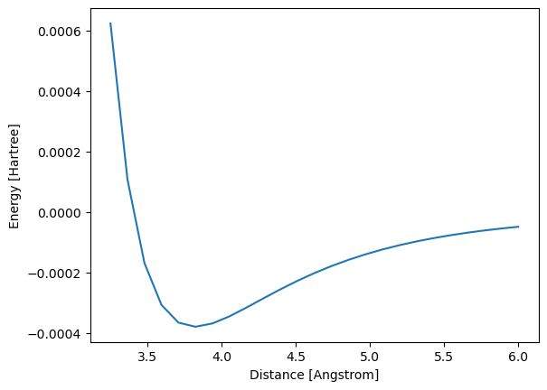

CP2K tutorials with Lennard-Jones potential
Contents
CP2K tutorials with Lennard-Jones potential#
Offical page: https://www.cp2k.org/exercises
NOTE: there is a python API PYCP2K, but should not use, since can not control which version
CP2K for windows https://github.com/brhr-iwao/CP2K_for_Windows/releases
put the path
C:\DATA\work\w23_CP2K\cp2k-2022.1.x64-pexsitosystem VAR
MS simulation#
MS run follows this tutorial https://github.com/oschuett/cp2k-notebooks/blob/master/Lennard-Jones.ipynb NOTE:
There is no way to make deformation in CP2K as in LAMMPS. Therefore, must run a series of simulations, each simulation for each distance, separately
Similar to run MS in LAMMPS
import numpy as np
import matplotlib.pyplot as plt
from IPython.display import clear_output
import sys, re, os
from pathlib import Path
dir_nb = Path(globals()['_dh'][0]) # jupyter-dir: Path object .__str__()
sys.path.append( str(dir_nb/"cp2k-2022.1.x64-pexsi") )
template = """
&GLOBAL ! section to select the kind of calculation
RUN_TYPE ENERGY ! select type of calculation. In this case: ENERGY (=Single point calculation)
&END GLOBAL
&FORCE_EVAL ! section with parameters and system description
METHOD FIST ! Molecular Mechanics method
&MM ! specification of MM parameters
&FORCEFIELD ! parameters needed to describe the potential
&SPLINE
EMAX_SPLINE 10000 ! numeric parameter to ensure calculation stability. Should not be changed
&END
&NONBONDED ! parameters for the non bonded interactions
&LENNARD-JONES ! Lennard-Jones parameters
atoms Ar Ar
EPSILON [K_e] 119.8
SIGMA [angstrom] 3.401
RCUT [angstrom] 25.0
&END LENNARD-JONES
&END NONBONDED
&CHARGE
ATOM Ar
CHARGE 0.0
&END CHARGE
&END FORCEFIELD
&POISSON ! solver for non periodic calculations
PERIODIC NONE
&EWALD
EWALD_TYPE none
&END EWALD
&END POISSON
&END MM
&SUBSYS ! system description
&CELL
ABC [angstrom] 10 10 10
PERIODIC NONE
&END CELL
&COORD
UNIT angstrom
Ar 0 0 0
Ar 0 0 <DIST>
&END COORD
&END SUBSYS
&END FORCE_EVAL"""
distances = np.linspace(start=3.25, stop=6.0, num=25)
energies = []
for dist in distances:
# create input file
inp = template.replace("<DIST>", "%f"%dist)
open("energy.inp", "w").write(inp)
# run CP2K
# !cp2k.popt energy.inp > energy.out
!startcp2k energy.inp > energy.out
# retrieve energy from output
energy_line = [line for line in open("energy.out").readlines() if "ENERGY|" in line]
energy = float(energy_line[0].split()[-1])
# store energy
energies.append(energy)
# plot dissociation curve
clear_output()
plt.plot(distances, energies)
plt.xlabel("Distance [Angstrom]")
plt.ylabel("Energy [Hartree]")
plt.show()
